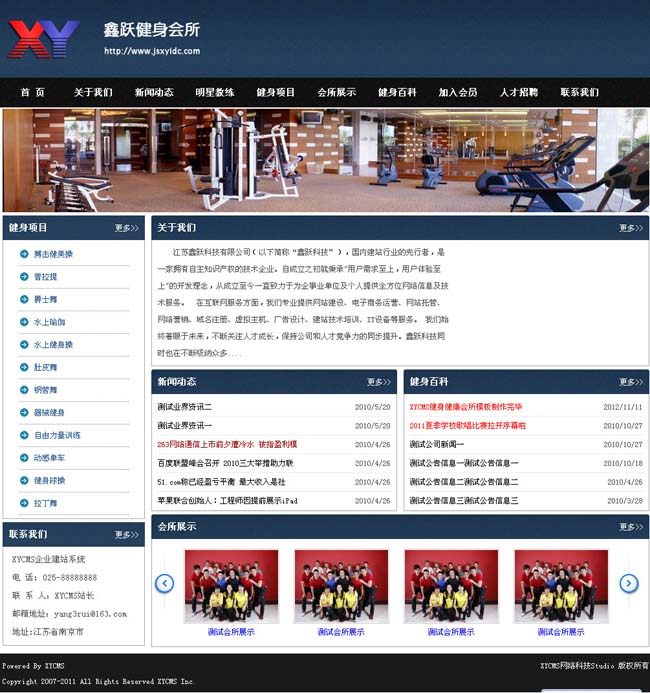
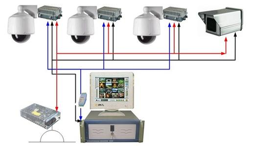

-
OA管理系统
所用技术：ASP.NET、MVC、Spring.net、EF、JQuery EasyUI
当今社会竞争激烈，企业想要占据优势地位需要在管理上下功夫，“向管理要效益”已经成 为企业的共识。协同OA的应用，打破了企业中各类信息孤岛、管理孤岛、应用孤岛，为企 业全员构建统一的办公平台，助力企业打造有生命力的运营管理体系，是其他业务类管理软 件所难以企及的一个高度，这个重担必须由面向人和组织的协同OA来担当。
从这个意义上来讲，协同OA软件在企业中的普及也是大势所趋。 在不同规模、信息化预算不同水平的细 分市场，OA厂商也有相对应的产品和服务，像微瞰等IT公司同样拥有针对这些企业的特色产品;
-
企业网站
所用技术：Java、BootStrap、MVC、Vue.js
随着现在网络的不断发展与进步，使得实体店铺也受到了很大冲击，面对这样的打击， 实际上也算是一种竞争，很多做实体店的店主也纷纷做起了自己的网站，希望网站能带给 自己更多的收获，对于拓展自己的发展渠道来说，也有积极的作用和影响。
所以，想要借助网站建设拓展渠道，并想真正取得一定的成就的话，那必须要聘请非常专业的网站建设公司， 因为他们更加熟悉网站建设的规则，合理的用户体验，网络营销的规则，并且有强大的美工、UI设计能在客 户打开企业的网站第一眼的同时，带给企业客户视觉上舒服的感觉。懂得这些规则的人，设计出来的网站， 就算是外行人一看，也是非常舒适。
-
智能家居监控系统
所用技术：大数据、可视化、视频摘要技术
智能家居监控系统能够自动控制和管理家电设备，对家庭环境的安全进行监控报警，并且 能够为住户提供安全舒适、高效便捷的学习生活及工作环境。系统将家庭中各种与信息相关 的通讯设备、家用电器以及家庭安保装置通过有线或者无线的方式连接起来，并且进行集中 或异地的监控、管理，保持家庭住宅环境的舒适、协调。与普通家居环境相比，智能家居不 仅具备传统的居住功能，提供舒适温馨、高效安全的高品位生活环境，还将一个被动静止的 居住环境提升为一个有一定智慧协助能力的生活帮手，进一步优化住户的生活质量。
微瞰科技

认真做事，回归价值